-
Indiana Jones e a Última Cruzada
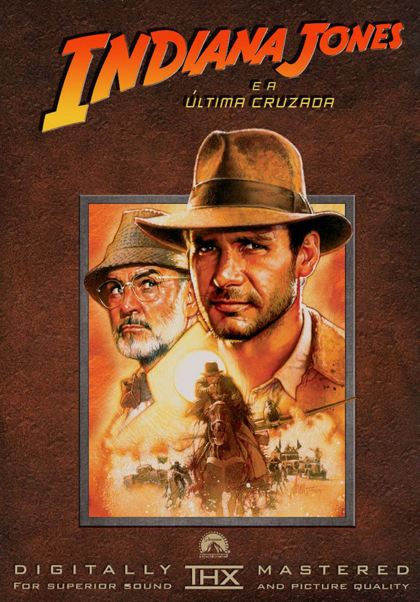
O arqueólogo Indiana Jones embarca em uma missão perigosa e cheia de aventuras para salvar seu pai, o professor Henry Jones, que foi sequestrado por nazistas e para tentar encontrar o lendário Santo Graal, cálice que Jesus teria usado na Última Ceia. Ver mais...
-
Star Wars: Episódio I - A Ameaça Fantasma
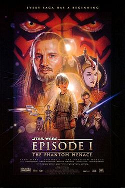
Obi-Wan e seu mentor embarcam em uma perigosa aventura na tentativa de salvar o planeta das garras de Darth Sidious. Durante a viagem, eles conhecem um habilidoso menino e decidem treiná-lo para se tornar um Jedi. Mas o tempo irá revelar que as coisas nem sempre são o que aparentam ser. Ver mais...
-
Avatar

No exuberante mundo alienígena de Pandora vivem os Na'vi, seres que parecem ser primitivos, mas são altamente evoluídos. Como o ambiente do planeta é tóxico, foram criados os avatares, corpos biológicos controlados pela mente humana que se movimentam livremente em Pandora. Ver mais...
-
Guardiões da Galáxia
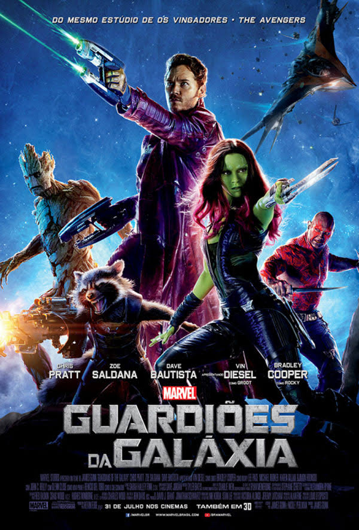
O aventureiro do espaço Peter Quill torna-se presa de caçadores de recompensas depois que rouba a esfera de um vilão traiçoeiro, Ronan. Para escapar do perigo, ele faz uma aliança com um grupo de quatro extraterrestres. Quando Quill descobre que a esfera roubada possui um poder capaz de mudar os rumos do universo, ele e seu grupo deverão proteger o objeto para salvar o futuro da galáxia. Ver mais...
-
Jurassic Park: Parque dos Dinossauros
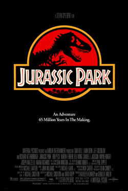
Os paleontólogos Alan Grant, Ellie Sattler e o matemático Ian Malcolm fazem parte de um seleto grupo escolhido para visitar uma ilha habitada por dinossauros criados a partir de DNA pré-histórico. O idealizador do projeto e bilionário John Hammond garante a todos que a instalação é completamente segura. Mas após uma queda de energia, os visitantes descobrem, aos poucos, que vários predadores ferozes estão soltos e à caça. Ver mais...
-
A Origem
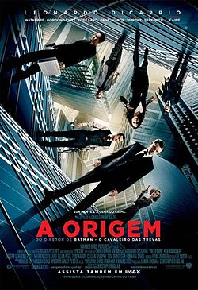
Don Cobb é um ladrão que invade os sonhos das pessoas e rouba segredos do subconsciente. As habilidades especiais de Cobb fazem com que ele seja procurado pelo mundo da espionagem empresarial, mas lhe custa tudo que ama. Cobb recebe uma missão impossível: plantar uma ideia na mente de uma pessoa. Se for bem-sucedido, será o crime perfeito, mas um amigo prevê todos os passos de Cobb. Ver mais...
-
A Chegada
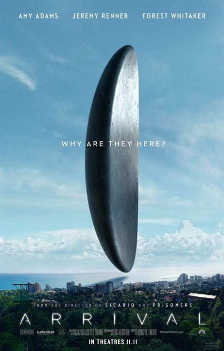
Naves alienígenas chegaram às principais cidades do mundo. Com a intenção de se comunicar com os visitantes, uma linguista e um militar são chamados para decifrar as estranhas mensagens dos visitantes. Ver mais...
-
Matrix
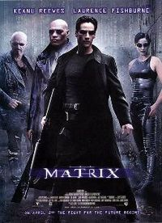
Um jovem programador é atormentado por estranhos pesadelos nos quais sempre está conectado por cabos a um imenso sistema de computadores do futuro. À medida que o sonho se repete, ele começa a levantar dúvidas sobre a realidade. E quando encontra os misteriosos Morpheus e Trinity, ele descobre que é vítima do Matrix, um sistema inteligente e artificial que manipula a mente das pessoas e cria a ilusão de um mundo real enquanto usa os cérebros e corpos dos indivíduos para produzir energia. Ver mais...
-
Gravidade
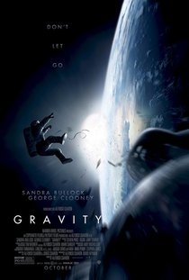
Dra. Ryan Stone e o astronauta Matt Kowalsky trabalham juntos para sobreviver depois que um acidente os deixa completamente à deriva no espaço, sem ligação com a Terra e sem esperança de resgate. Ver mais...
-
A.I. - Inteligência Artificial
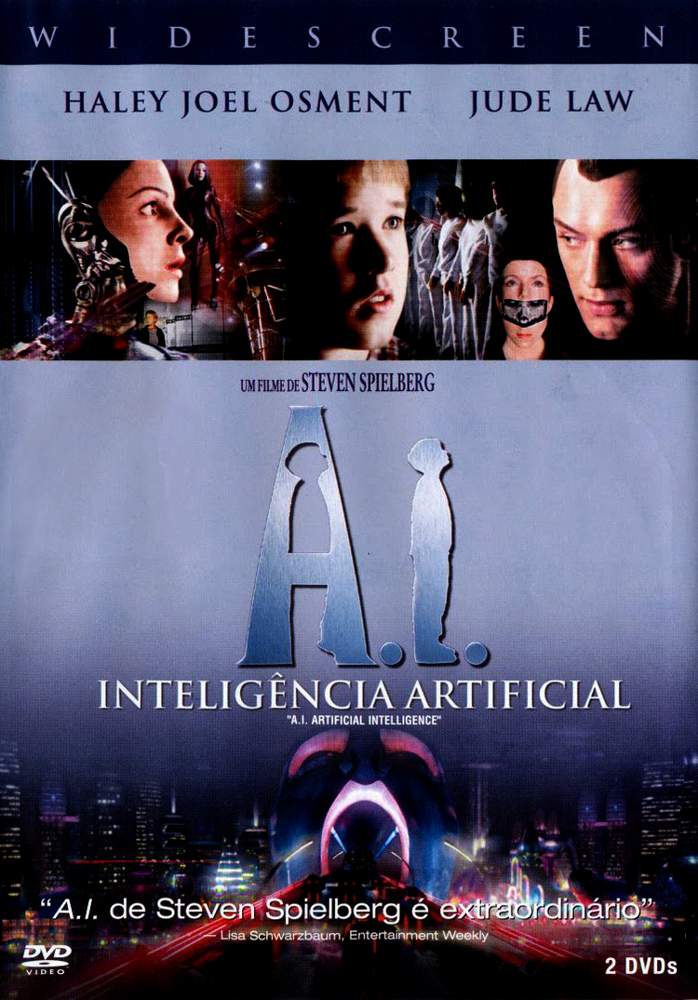
O primeiro menino-robô programado para amar, David, é adotado por um funcionário da Cybertronics e sua esposa. Apesar de aos poucos ele ir se tornando o filho do casal, uma série de circunstâncias inesperadas dificulta a vida de David. Sem a total aceitação dos humanos ou das máquinas, o menino-robô embarca em uma jornada para descobrir seu verdadeiro mundo. Ver mais...
-
Mad Max: Estrada da Fúria
Em um mundo apocalíptico, Max Rockatansky acredita que a melhor forma de sobreviver é não depender de ninguém. Porém, após ser capturado pelo tirano Immortan Joe e seus rebeldes, Max se vê no meio de uma guerra mortal, iniciada pela imperatriz Furiosa que tenta salvar um grupo de garotas. Também tentando fugir, Max aceita ajudar Furiosa. Dessa vez, o tirano Joe está ainda mais implacável pois teve algo insubstituível roubado. Ver mais...
-
O Exterminador do Futuro: Gênesis
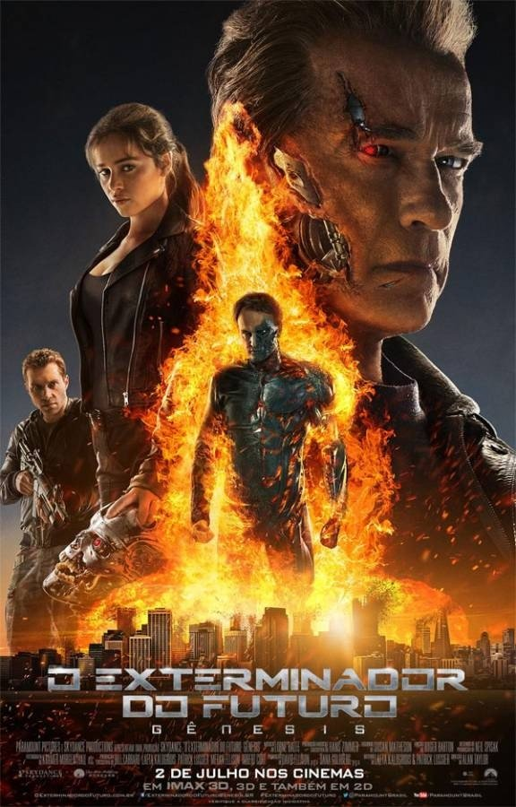
John Connor, líder da resistência humana contra Skynet, envia Kyle Reese de volta a 1984 para proteger sua mãe, Sarah. Porém, Reese se surpreende ao encontrá-la com um exterminador que age como seu protetor, e descobre que o passado foi alterado. Ver mais...
-
WALL·E
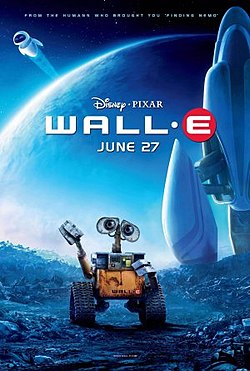
WALL-E, abreviação de Waste Allocation Load Lifter Earth-class, é o último robô deixado na Terra. Ele passa o dia arrumando o lixo do planeta. Mas por 700 anos, WALL-E desenvolveu uma personalidade e é mais do que um robô. Ao avistar Eve, uma sonda mecânica em missão à Terra, ele se apaixona e resolve segui-la por toda a galáxia. Ver mais...
-
Jumper
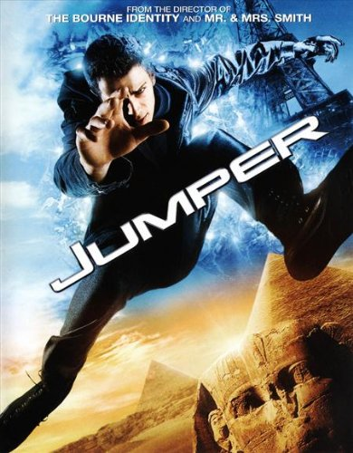
David Rice tem a habilidade de se teletransportar para qualquer lugar que imaginar. Ele usa este dom para sair pelo mundo e vive do dinheiro que rouba ao "pular" nos cofres dos bancos. Ele é capturado pelo maldoso Roland Cox, que sabe como fazer David parar de se teletransportar, mas ele escapa e se une à sua paixão de escola, Millie, formando uma aliança com o amigo Griffin para um combate mortal com Cox. Ver mais...
-
Homem-Aranha 3
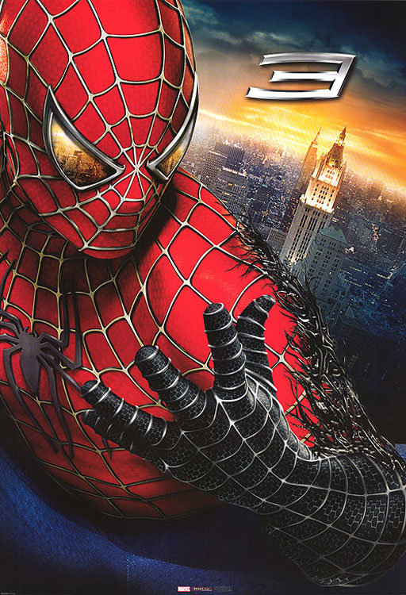
O relacionamento entre Peter Parker e M.J. parece estar dando certo, mas outros problemas começam a surgir. A roupa de Homem-Aranha torna-se preta e acaba controlando Peter, que apesar de aumentar seus poderes, revela o lado obscuro de sua personalidade. Os vilões Venon e Homem-Areia tentam destruir o super-herói. Ver mais...